In 2023, I wanted a synth with physical knobs that I could actually play and perform with outside of my basement. Everything I found on the market was either over my budget or too limited to be worth it, so I decided to build my own.
I estimated three months; it took about two years.

System overview
CESyL is two computers in a wooden box. The Teensy handles everything physical, the RasPi handles everything musical, and a Python program I wrote gets the two talking.
Out: about 300 RGB LEDs, four around each encoder.→ shift registers
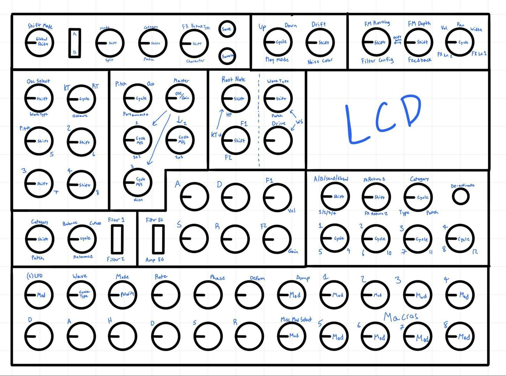
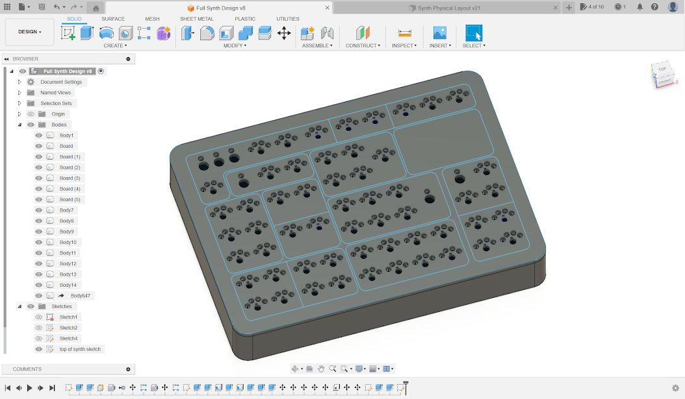
Hardware
The first problem: the Teensy only has about 40 I/O pins, and the panel needed over 300 inputs and 900 outputs. I went with chained shift registers instead of multiplexers, so each chain only needs three pins (data, shift clock, and latch). To keep the wiring manageable, I designed three PCBs in Fusion 360 and had them made by JLCPCB, each in its own color so I could tell them apart at a glance:
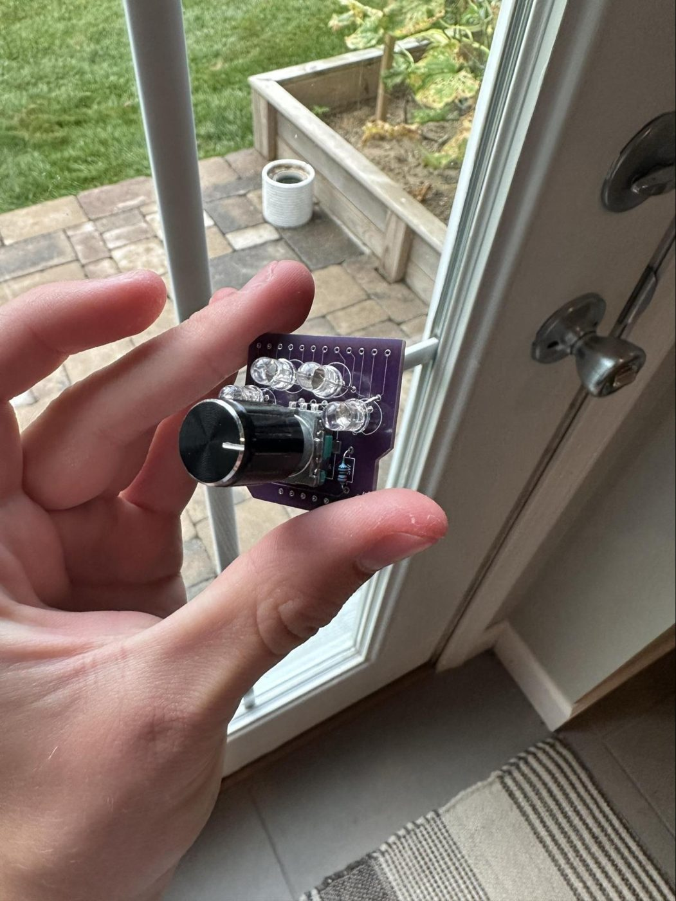
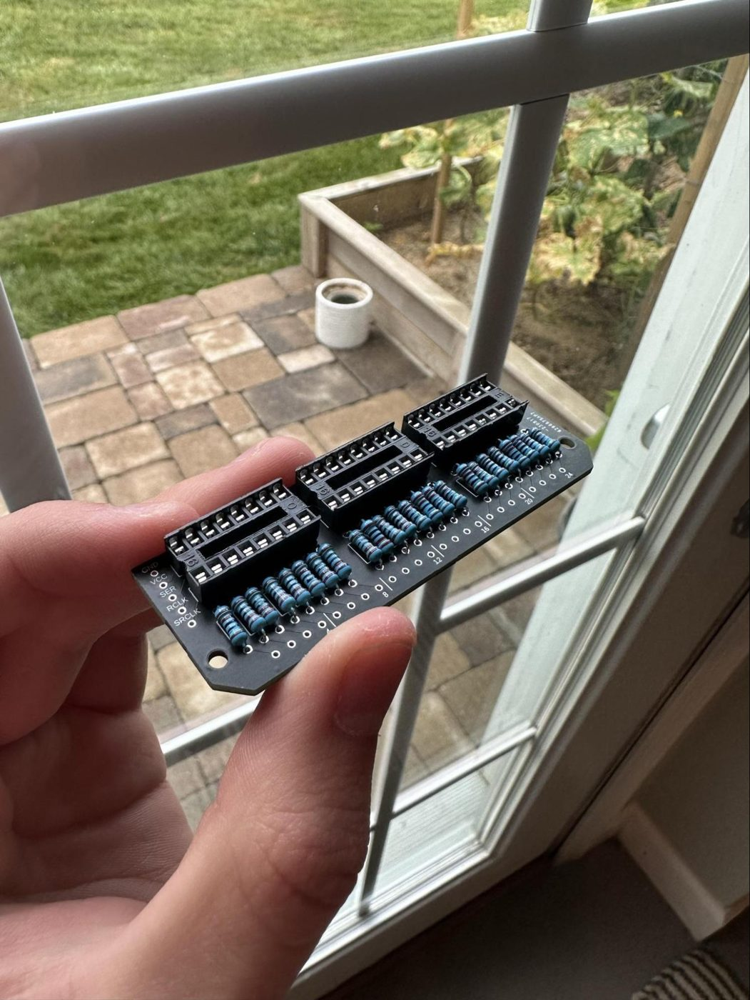
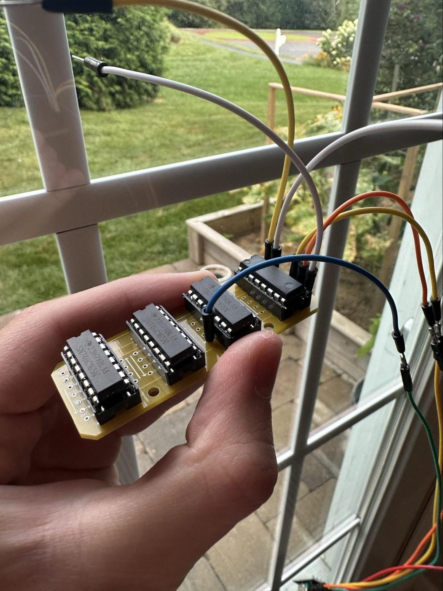
The numbers work out nicely. Three output registers give 24 outputs, which is exactly eight RGB LEDs, so each black board drives two purple boards. Each yellow board reads about ten encoders, which splits the panel into six modules that I could build and test one at a time.
Shift registers can only switch an output fully on or off, which would leave each LED with only eight colors. So the firmware uses 5-bit software PWM: it splits each refresh into 32 time slices and turns each color channel on for some fraction of them. That gives every channel 32 brightness levels.
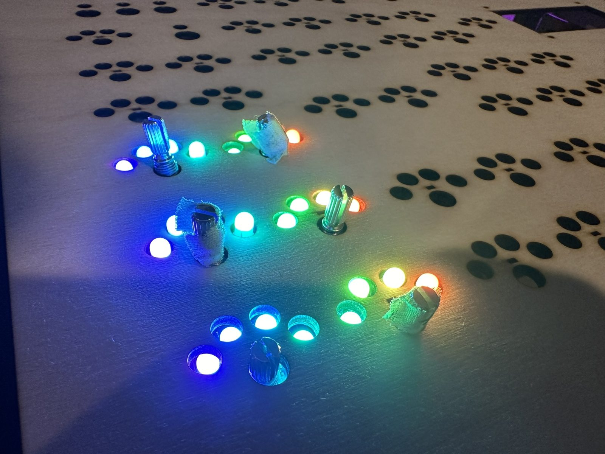
Firmware and serial protocol
The Teensy and RasPi trade one line of text per update over USB serial. The RasPi sends every LED value (periods between LEDs, a vertical bar between modules, and a newline at the end), and the Teensy answers with the current encoder counts and button states in the same format. Since each side waits for the other to reply, neither one can flood the other with data.
Software
Rather than hard-coding every control, I defined them all in a 1,243-line JSON file. Each encoder’s entry lists its section (filter, LFO, oscillator, FX, and so on), the OSC address it controls in Surge, how its LEDs behave, and what its push button does. That way, adding a feature usually meant editing data instead of rewriting code.
- Virtual encoders. One physical encoder can hold several parameters, and its button switches between them. That’s how 55 encoders cover Surge’s two scenes, 12 LFOs, 8 macros, and the FX bank.
- LED behaviors. The LEDs use a few reusable modes: a ring that fills from the left for normal parameters, one that fills from the center for parameters that go negative, a solid color, and a binary count. Each section gets its own color from an 11-color palette.
- Modulation mode. Encoders can switch to editing modulation depth instead of the parameter itself, and the LEDs show which modulation sources are active.
- Two-way sync. On startup, the RasPi asks Surge for the current patch, and it listens for
/param,/patch, and/modmessages from then on, so loading a new sound updates the whole panel. - Startup. A boot script launches everything and detects any USB keyboard plugged into the side, so CESyL works as soon as it’s powered on.
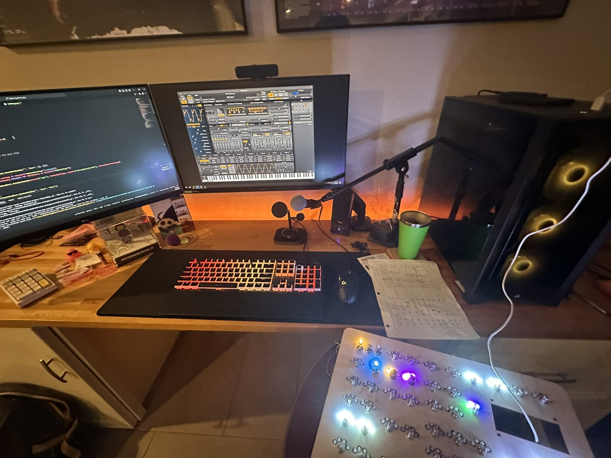
I got the first two encoders working in October 2023. In fall 2024, I rewrote the software from the ground up and brought it back one section at a time: filter, envelopes, LFOs, mixer, and waveshaper first, then the FX bank and oscillators. Along the way, some OSC messages weren’t arriving in time, which took a while to debug. Macros and modulation came last, in December 2024.
Building it
I prototyped every circuit on a breadboard before soldering anything, then built and tested in stages: single boards, then modules, then the full system. In all, that came to about 2,500 wires and over 10,000 solder joints. Near the end, the Teensy needed external power but also had to send data to the RasPi through that same USB port, so I modified a USB cable to split its power and data lines, letting one supply power both computers. The enclosure is a wooden frame with laser-cut panels that I made at my local library’s makerspace.
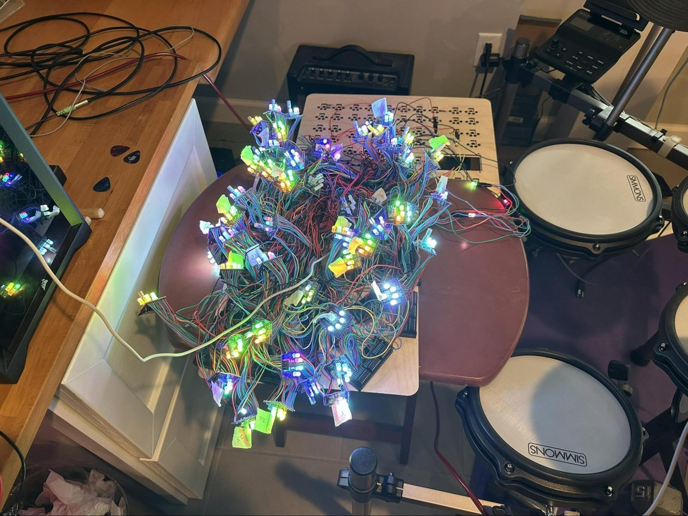
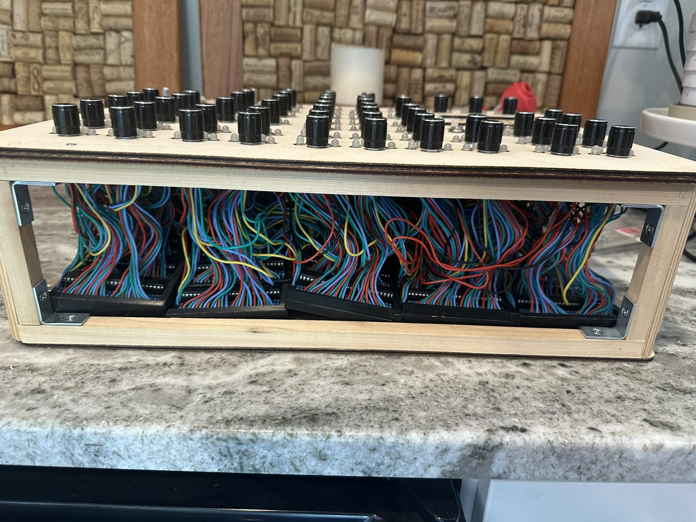
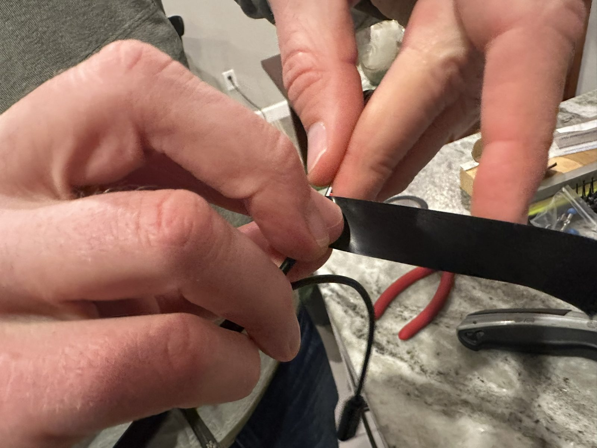
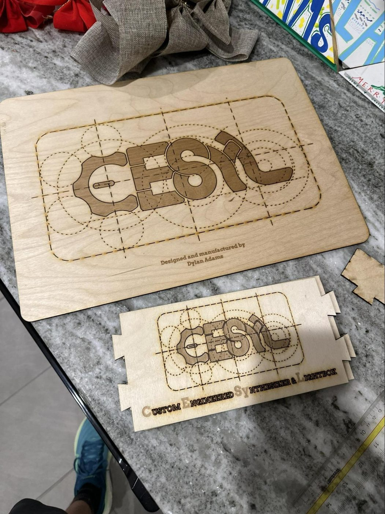
Results
CESyL works! I’ve used it for jam sessions with friends, posted videos of it, and presented it at an elementary school in my district, and it cost about a third as much as a comparable commercial synth. It isn’t perfect, though. A few LEDs flicker and some knobs occasionally stick. Both come down to my own soldering: across thousands of hand-soldered joints, a few faulty connections were bound to slip through, so the quality of those connections ended up being the bottleneck. When I wrote the project up as my AP Research paper, I concluded that for most people, buying a synth is still the better choice because of the time and reliability tradeoffs. Next, I’d like to try building an analog synth.
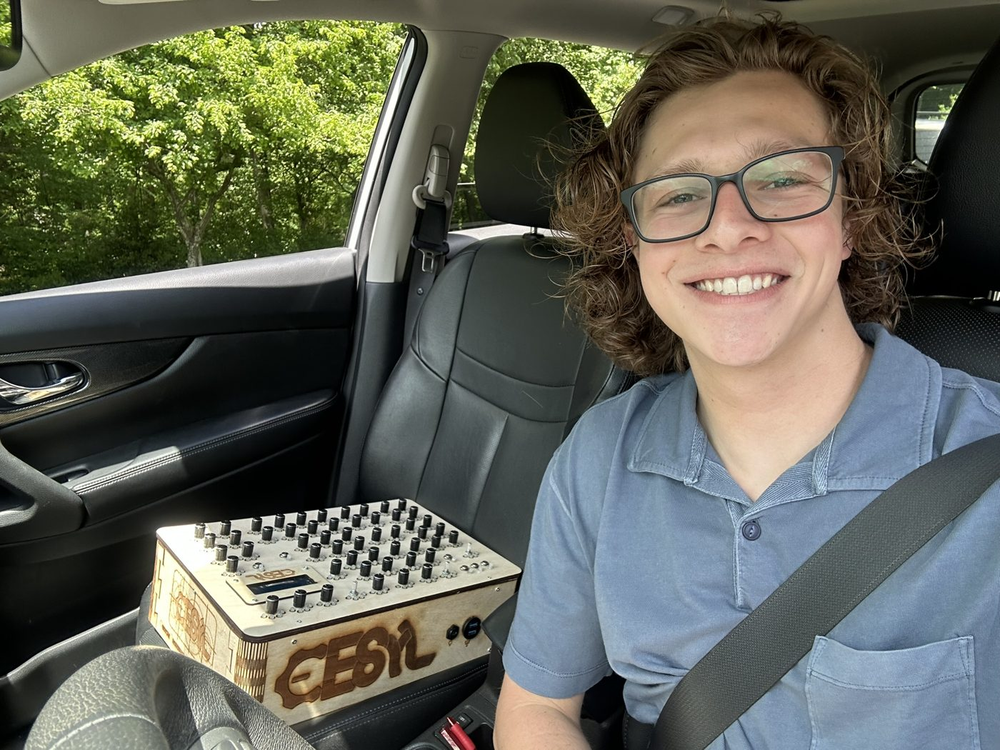
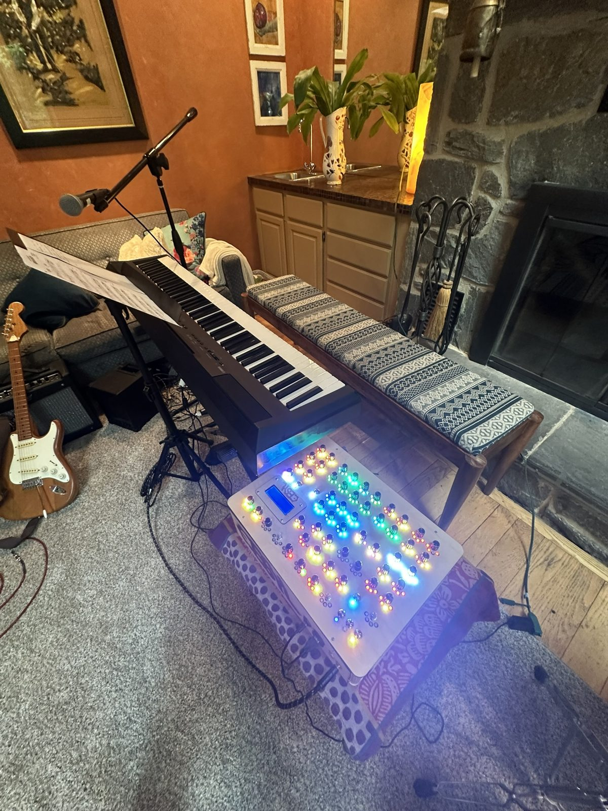
The paper, “Designing and Constructing a Musical Synthesizer,” is 5,479 words, and I defended it in an oral presentation in spring 2026. The code is on GitHub.
Build video
The whole build, start to finish, in about an hour (timelapses included).
 ▶ Play on YouTube
▶ Play on YouTube